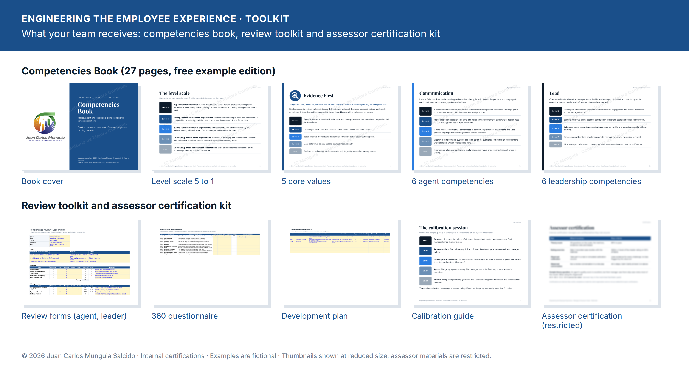

People & Performance
Engineering the Employee Experience
Agents treat customers the way they are treated. Engineering the Employee Experience is the sister program to
Engineering the Customer Experience, and it works on how your people are treated: what “good” looks like in each role,
how they are rated, and how they grow. It starts with a competency career path built for your operation, then a
review cycle your managers are certified to run on their own. Led by a licensed Organizational Psychologist and
Lean Six Sigma Master Black Belt, with workshops already delivered to 250+ employees.
Module 1 · The competency career path
One standard, from agent to director
- 5 core values everyone is rated on, each with five observable levels.
- 6 agent competencies: Communication · Self-Leadership · Organized · Analytical Thinker · Results Driven · Integrity.
- 6 leadership competencies for supervisors and managers: Engaging Communication · Lead · Organized Execution · Systems Thinker · Drives Results & Change · Integrity & Fairness.
- A 5-role career ladder from Customer Care Agent to Director, with the level each role requires and the CXE and Belt credential for each step.
- Reviews with evidence: self, manager and peer ratings, calibration across managers, and a development plan reviewed every month.

What your team receives · click to enlarge
2 months · teams up to 30
Foundation program
Values & career path
One team or role family that needs a clear standard.
- Values with a five-level behavior scale, built with your leaders
- Competency matrix for up to three roles
- Level descriptions for one career ladder
- Review format and one pilot cycle
- Managers certified internally as assessors
- One weekly session with you
4 months · 30 to 150 people
Build program
Reviews & development
A department, line of business or client program.
- Everything in the Foundation program
- Full agent and leadership matrices, and career ladders with promotion criteria
- 360 feedback, calibration sessions and one full review cycle
- A development plan for every person, and a learning catalog mapped to competencies
- HR partners certified internally as calibrators
- Fortnightly support
6 months · more than 150 people
Transform program
Talent system
Sites, regions or the whole company.
- Everything above
- Company-wide model tied to hiring, promotion and succession
- Competency-based interviews and role plays for recruitment
- Mentoring program, internal coaches and a talent dashboard
- Your HR team certified internally to own and update the model
- Documented handover and close
Add-ons for any program: workshops in Emotional Intelligence, Time Management, Coaching & Feedback,
Stress Management and Meditation. For organizations in Mexico, a NOM-035-STPS-2018 package: prevention policy,
reference guides by workplace size, analysis and action plan. Same terms as all my programs: a free 30-minute call,
a proposal in 5 business days, two-month renewable contracts, twelve months maximum.
Build the path. Keep your people.
Download the free Competencies Book to see the values, the agent and leadership competencies and the career path
in full, then let's talk about what it would take to build yours.
Free example edition, 27 pages, built for a fictitious service operation. Certifications are internal and are not accredited third-party certifications. The competency areas are informed by PMI’s PMCD Framework (3rd ed.); names and descriptions are original work, not affiliated with or endorsed by PMI.